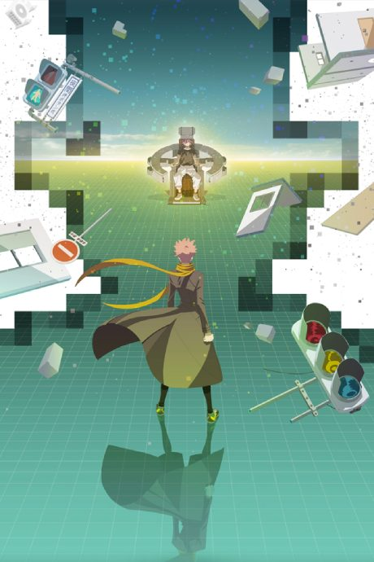
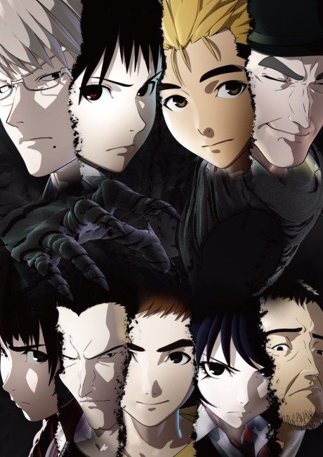

B: The Beginning
B: The Beginning
In an island kingdom, investigator Keith returns to the royal police to catch a serial killer known as Killer B, while a young man named Koku hunts his own enemies.
An original anime, so there's no book to continue with.
6.9AniList score
—Animeter, no votes yet
18episodes, 2 seasons
Rate it or report where you stopped
2 seasons, 18 episodes
In airing order. Episode numbers on this site count straight through every season, so season 2 starts at episode 13.
1
2018 · Web
B: The Beginning
Episodes1–1212 ep
2
2021 · Web
B: The Beginning: Succession
Episodes13–186 ep
Sources: AniList
More like B: The Beginning
 Original8.1
Original8.1
 Original7.4
Original7.4
 Manga Ch. 1088.4
Manga Ch. 1088.4
 Original7.8
Original7.8
 Manga Ch. 697.4
Manga Ch. 697.4

Original7.7 Original8.6
Original8.6
 Manga Vol. 27.7
Manga Vol. 27.7

Manga Ch. 227.1 Original8.5
Original8.5
 Manga Ch. 578.0
Manga Ch. 578.0
 Manga Ch. 1107.7
Manga Ch. 1107.7